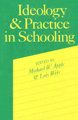

Investigations of the content and organization of the curriculum and experience of teachers and students in schools
Investigations of the content and organization of the curriculum and experience of teachers and students in schools


 Investigations of the content and organization of the curriculum and experience of teachers and students in schools
Investigations of the content and organization of the curriculum and experience of teachers and students in schools

|  |
Ideology and Practice in Schoolingedited by Michael W. Apple and Lois Weispaper EAN: 978-0-87722-313-9 (ISBN: 0-87722-313-0) |
"[This] does more to clarify what schools actually do, and why most American research on education leaves us with our myths about schooling intact, than anything that has been published in America."
—Edgar Z. Friedenberg, Dalhousie University
Over the past decade there has been much theoretical work on the relationship between schooling and economic and cultural reproduction. A good deal of this research has remained outside the school, not going inside to examine the actual curriculum and teaching practices that go on every day in the classroom.
Ideology and Practice in Schooling brings together investigations of the content and organization of the curriculum and the experience of teachers and students in schools. Included are ideological analyses of history, art, literature, economics, and science curricula, as well as ethnographic studies of the lived culture of student oppositional practices, changes in the control of teachers' work, the experience of minority students at community colleges, of girls in a secretarial training program, and of children in primary schools. Each original essay blends together recent work on the nature of the relationship between society and education with an in-depth examination of the internal practices of schooling, and also points out where there are possibilities for emancipatory educational action.
Excerpt available at www.temple.edu/tempress
"The daily life of teachers, administrators, parents, and students in our schools is filled with political and ideological pressures and tensions. The turmoil caused by budget cuts and layoffs, by class, race, and gender antagonisms, and even by the internal politics of complex bureaucratic institutions, is part of what one experiences when one works within the institution. At a time of fiscal crisis and, often, great ideological differences about what schools should do, it is hard not to think of education as part of a larger framework of institutions and values. While this had been recognized for years by many who either work in or engage in research on schools, the dominant tradition of educational research, unfortunately, has been overly psychological. It has tended to be individualistic and to ignore the political and economic reality of schools. By focusing primarily on how to get students to learn more mathematics, science, history, and so forth (surely not an unimportant problem), educational research has neglected to inquire into the larger context in which schools exist, a context that may actually make it very difficult for them to succeed.
"Actually, this dominant model—what has been called the "achievement tradition"—has been weakened by its neglect of two things. Because of a positivistic emphasis and an overreliance on statistical approaches, it has been unable to unravel the complexities of everyday interaction in schools. Its focus on product has led to a thoroughgoing naiveté about the very process of education, about the internal dynamics of the institution. Second, its tendency toward atheoreticism has made it difficult for us to link these internal dynamics to the larger ideological, economic, and political context. Schools sit isolated from the structurally unequal society (and the conflicts this inequality engenders) of which they are a part.
"In their exceptionally clear discussion of the major approaches to research in education, Karabel and Halsey state that among the most important research programs now required is one that will connect interpretive studies of schools with structural analyses. That is, an approach that combines an investigation of the day-to-day curricular, pedagogic, and evaluative activities of schools with generative theories of the schools' role in society is needed to move us forward.
"This volume takes up their recommendation. Its central concern is to fill much of the gap. The individual chapters all share a fundamental interest. What actually happens at the level of practice in educational institutions? In what ways should our understanding of these practices be informed by current theoretical appraisals of the role of education in advanced capitalist societies such as our own? The authors treat Karabel and Halsey's argument seriously. Each seeks to integrate an analysis of the level of practice (that is, what the social relations, curriculum, teaching, and so on are) in our institutions with a critical structural appraisal of how such practices illuminate the relationship of the school to the surrounding socioeconomic order."
From the Introduction
"[A] significant contribution to an important growing body of radical literature on education that can provide interested educators with a deeper understanding of the linkages between theory and practice and with a better sense of how classroom practices aid in the production and reproduction of social classes."
—Educational Studies
Acknowledgements
Contributors
Introduction
1. Ideology and Practice in Schooling: A Political and Conceptual Introduction – Michael W. Apple and Lois Weis
Part I. Ideology and Commodified Culture
2. Workers, Labor and Economic History, and the Textbook Content – Jean Anyon
3. The American Revolution in Children's Fiction: An Analysis of Literary Content, Form, and Ideology – Joel Taxel
4. Aesthetic Curriculum and Cultural Reproduction – Landon E. Beyer
5. Defensive Teaching and Classroom Control – Linda M. McNeil
6. Curricular Form and the Logic of Technical Control – Michael W. Apple
Part II. Ideology and Lived Culture
7. Classroom Management, Student Opposition, and the Labor Process – Robert B. Everhart
8. School Structure and Teachers' Work – Andrew Gitlin
9. Becoming Clerical Workers: Business Education and the Cutlure of Femininity – Linda Valli
10. Schooling and Cultural Production: A Comparison of Black and White Lived Culture – Lois Weis
11. Play in the Workplace – Nancy R. King
Index
Michael W. Apple is Professor of Curriculum and Instruction and Educational Policy Studies at the University of Wisconsin, Madison.
Lois Weis is Assistant Professor of Social Foundations of Education at the State University of New York, Buffalo.
© 2015 Temple University. All Rights Reserved. This page: http://www.temple.edu/tempress/titles/255_reg.html.